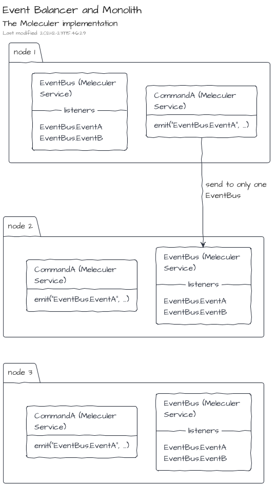
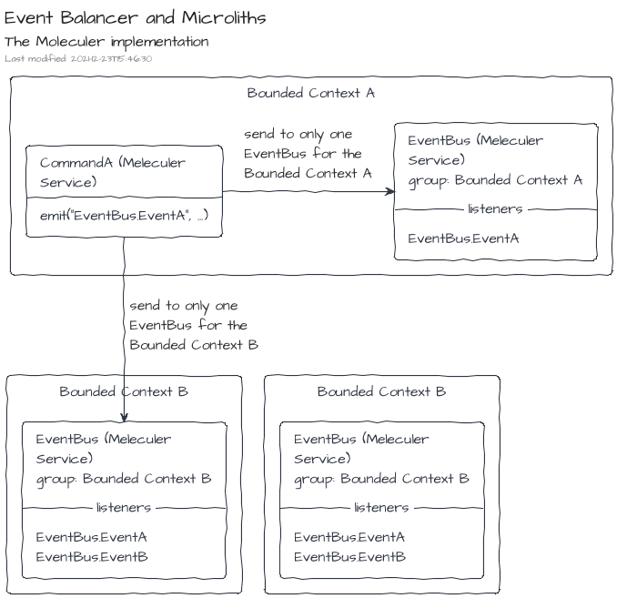

The Moleculer implementation
The Moleculer implementation is defined in the NPM package @tmorin/ceb-messaging-moleculer.
The Moleculer implementation leverages on the features provided by the microservices framework.
Management of Commands and Queries
There is one Moleculer service per command or query types.
For instance, the command type CommandA will be managed by the service CommandA.
About commands, each service provides two Moleculer actions: execute and executeAndForget.
The first one executes the command handler and return the result.
The second one just executes the command handler at the next clock thick.
For instance, the command type CommandA can be executed within the Moleculer world with the actions CommandA.execute and CommandA.executeAndForget.
Each action accepts only one parameter: the command.
About queries, each service provides only one action: execute.
The action executes the query handler and return the result.
For instance, the query type QueryA can be executed within the Moleculer world with the action QueryA.execute.
The action accepts only one parameter: the query.
Management of Events
The Events are managed by a single Moleculer service: EventBus.
Each time an Event is published, the type of the Moleculer event is EventBus.<MESSAGE_TYPE>.
For instance, when the Event EventA is published, the Moleculer event name is EventBus.EventA.
By default, the implementation publish messages using the balanced mode.
That means, each balanced event will be processed by only one EventBus Moleculer service instance within the cluster.
The default mode works well for monoliths where the logic is replicated in each node of the cluster.

However, for Microliths or even Microservices, the EventBus instances have to arrange in logical groups.
The group name of MoleculerEventBus instances can be provided by constructor.

The Inversion Module
The package provides an Inversion Module which can be used to create the MoleculerGateway instance and register it on the registry.
Create a container with the default module behavior, i.e. a ServiceBroker is expected in the registry:
import { ContainerBuilder, ModuleBuilder } from "@tmorin/ceb-inversion-core"
import {
Gateway,
GatewaySymbol,
MessageBuilder,
} from "@tmorin/ceb-messaging-core"
import {
MoleculerModule,
ServiceBrokerSymbol,
} from "@tmorin/ceb-messaging-moleculer-inversion"
import { ServiceBroker } from "moleculer"
ContainerBuilder.get()
// create a service broker
.module(
ModuleBuilder.get()
.configure(function (registry) {
registry.registerFactory<ServiceBroker>(
ServiceBrokerSymbol,
() => new ServiceBroker()
)
})
.build()
)
// register the module which build the Moleculer Gateway
.module(new MoleculerModule())
.build()
.initialize()
.then((container) => {
// resolve the gateway
const gateway = container.registry.resolve<Gateway>(GatewaySymbol)
// publish a moleculer message
gateway.events.publish(MessageBuilder.event("Hello").build())
})
.catch((e) => console.error(e))
Create a container with a provided ServiceBroker instance. In that case, the provided ServiceBroker will be registered in the registry.
import { ContainerBuilder } from "@tmorin/ceb-inversion-core"
import {
Gateway,
GatewaySymbol,
MessageBuilder,
} from "@tmorin/ceb-messaging-core"
import { MoleculerModule } from "@tmorin/ceb-messaging-moleculer-inversion"
import { ServiceBroker } from "moleculer"
ContainerBuilder.get()
// register the module which build the Moleculer Gateway
.module(
new MoleculerModule({
broker: new ServiceBroker(),
})
)
.build()
.initialize()
.then((container) => {
// resolve the gateway
const gateway = container.registry.resolve<Gateway>(GatewaySymbol)
// publish a moleculer message
gateway.events.publish(MessageBuilder.event("Hello").build())
})
.catch((e) => console.error(e))